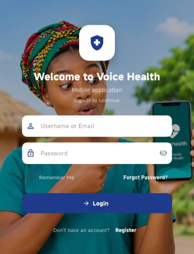

VoiceHealth – Healthcare Assistance Application
A healthcare assistance application designed to help users access health-related information, symptom guidance, and interactive consultation assistance through an intuitive mobile interface.
Problem Being Solved:
Many individuals face delays or geographical barriers when seeking preliminary medical advice. VoiceHealth provides an accessible, responsive mobile gateway for prompt health information retrieval and appointment organization.
Technologies Used:
Flutter
Dart
Mobile UI
REST APIs